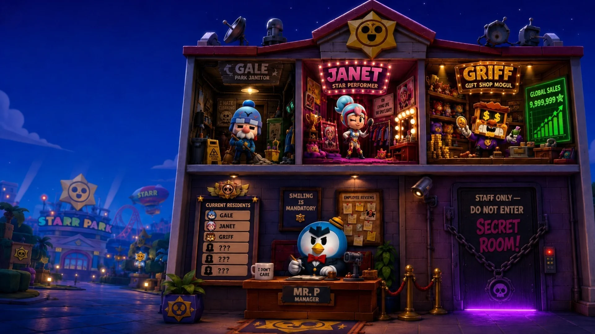
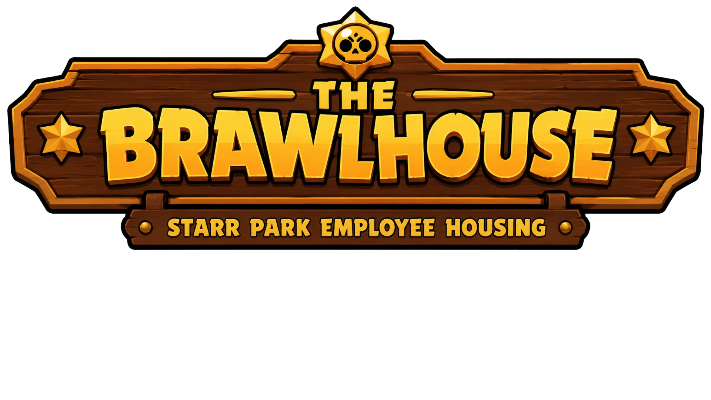
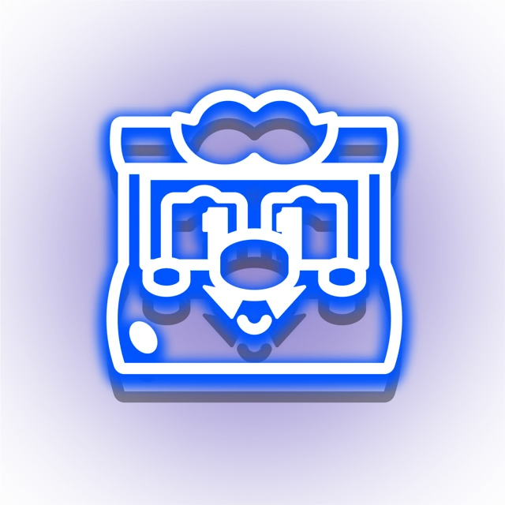

Welcome to the BrawlHouse. Starr Park employee housing. I manage this building. I have been here for some time.

Gale's Room
Janet's Room
Griff's Room
Mr. P — Front Desk
🔒 Secret Room
Click a room above, or choose a resident on the right

The BrawlHouse
'">
Starr Park Employee Housing
Current Residents
Gale
Maintenance & Handyman · Starr Park
Knows which doors lock from the inside.
›
Janet
Entertainment & Stunt Show · Starr Park
The walls here are very thin.
›

Griff
Accounts & Procurement · Starr Labs
Loves a good business proposal. Be careful.
›
Front Desk
Mr. P
Front Desk Manager · Permanent Resident
He does not like talking about himself.
›
Restricted
🔒
Secret Room
Staff Only · Do Not Enter
Locked. Ask the residents for clues.
Resident Board
Current & Upcoming
Gale
Janet
Griff
???
???
???
ID
Sign in via your Supercell ID to save your progress
mockup login — connecting enables live AI for all four brawlers
⚠ Prototype
This is a concept prototype, not a live product. While you're connected via the Supercell ID box above, all four brawlers run on live AI (Google Gemini) with a locked character brief; disconnected, they run on a hand-written dialogue engine — keyword matching with typo tolerance, fuzzy phrase detection, varied non-repeating replies and in-character fallbacks, so the conversation stays responsive even when you wander off-script. Every brawler's answers are bound by the same guardrails either way — the puzzle, the passcode and the Secret Room stay deterministic regardless of which one is replying. The mystery draws on the Nano Starr ARG released by Supercell. Not affiliated with or endorsed by Supercell. Characters may give unexpected answers. Concept and writing by Tessa Kerk.
Gale
Maintenance & Handyman · Starr Park
Ask anything. Not everything will be answered.
Gale
Maintenance & Handyman
0/7 FRAGMENTS FOUND
Session: 0 / 30 exchanges
Mockup Only
Entering the room…
► FILE RECOVERED0 / 7
RECOVERED FILES
RECOVERED FILES
RESTRICTED ACCESS
Enter the Passcode
You have recovered all seven files.
The passcode is hidden in the evidence.
Look closer.
NANOSTARR INTERNAL ARCHIVE — 1985► ACCESS GRANTEDDR. WENDY’S FILESYou recovered all seven fragments and identified the scientist who tried to stop it. Her research has been in this room since 1984. Somebody had to find it.ACCESS DR. WENDY’S FILES →